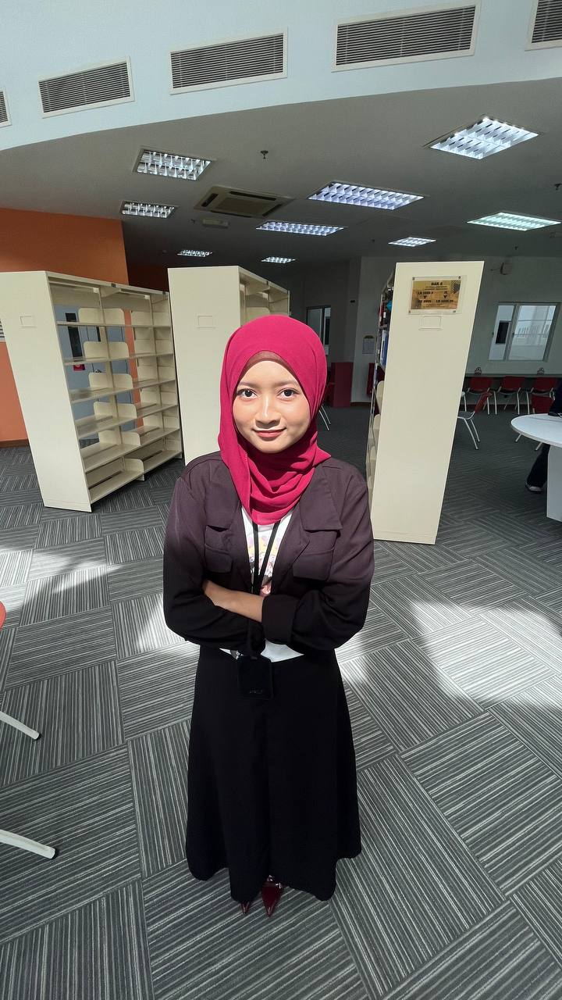

Learn more about my background, interests, and journey. Here you will discover my personal story, academic path, and passions that inspire my digital projects.

Hello and welcome to my personal website! My name is Nurul Aniza Ismail Hashim, a passionate and creative Diploma in Information Management student at Universiti Teknologi MARA (UiTM).
I’ve always believed that creativity and technology go hand in hand. ...
Started my Diploma in Information Management, where I began exploring the world of technology and information systems. This program has allowed me to develop both practical skills and knowledge, while also discovering my passion for creativity and problem-solving. Each project and experience has motivated me to grow and improve as I continue my learning journey.
Developed my first website projects, which gave me hands-on experience in turning ideas into functional designs. Through these projects, I learned how to structure layouts, style content, and make websites more user-friendly. It was exciting to see my creations come to life, and it strengthened my interest in web development and digital design.
Gained practical experience during my internship and projects, which allowed me to apply the skills I had learned in real-world situations. I worked on creating digital materials, managing tasks, and collaborating with others, which helped me build confidence and improve my problem-solving abilities. These experiences gave me a better understanding of how theory translates into practice and motivated me to keep learning and growing in my field.